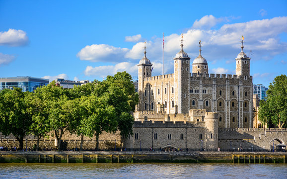
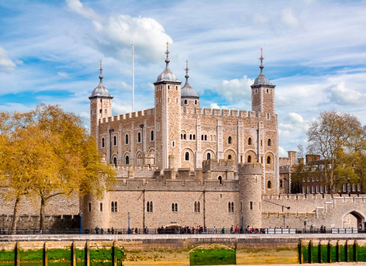
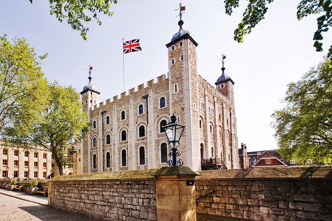

The Tower of London is a historic castle in central London, known for housing the Crown Jewels and serving as a royal palace and prison.
The Tower of London was founded by William the Conqueror in 1066 and has stood for over 950 years. Originally built as a royal palace and fortress, it became infamous as a prison where high-profile figures, including Anne Boleyn and Guy Fawkes, were held and executed.
One of the Tower’s most iconic features is the presence of the Crown Jewels, which are still kept there today. The collection includes more than 23,000 gemstones and is used in royal ceremonies such as the coronation of the monarch. Visitors can view the jewels under armed guard, making it a popular attraction.
The Tower is also famously home to the Yeoman Warders, or “Beefeaters,” who serve as ceremonial guards and tour guides. A lesser-known but fascinating tradition is the care of the ravens; legend says that if the ravens ever leave the Tower, the kingdom will fall. To this day, at least six ravens are kept on the grounds at all times.
Back to Menu